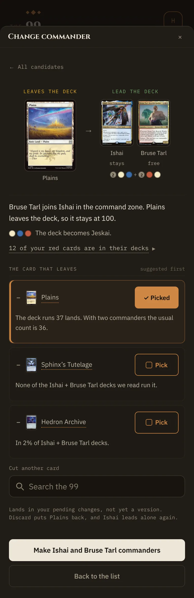
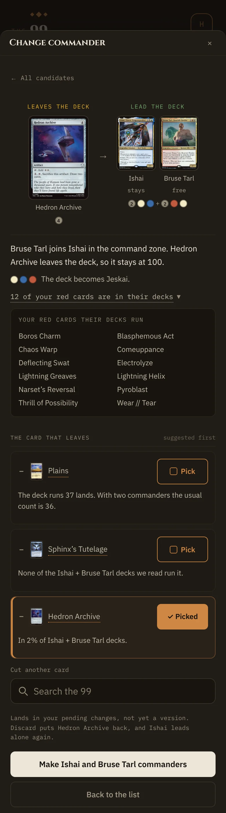
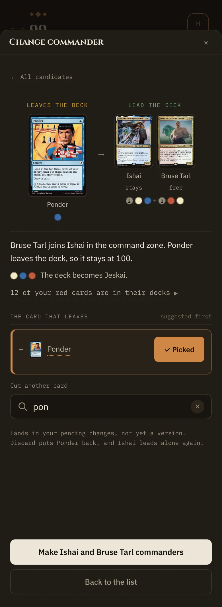
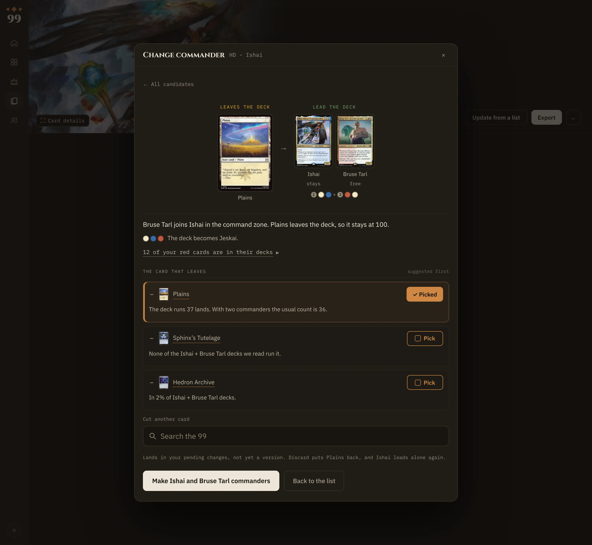

Confirm
A deck at 100 goes to 101 when a partner comes from outside, so the confirm asks which card leaves, with a suggestion picked. Suggestions: a basic land while the deck runs 37 or more (the land count drops to 36 with two commanders), then the two cards the pair’s decks run least. No model call.
C1 · confirm, phone

Change commander’s confirm: Leaves the deck Plains → Lead the deck Ishai (stays) + Bruse Tarl (free). Then the widened identity, then The card that leaves: Suggested changes’ cut line, three of them, the first picked. One tap still confirms.
C2 · another pick, colors open

Picking another line moves the pick (one card leaves). The plate and the sentence follow it. 12 of your red cards are in their decks opens the shipped figure plate with their names.
C3 · cut another card

Cut another card searches the 99 and shows matches as the same lines, so any card can go. Clearing the field brings the three suggestions back.
C1 · confirm, desktop

Desktop: one column, buttons in a row. The CTA is the shipped pair CTA, Make Ishai and Bruse Tarl commanders.